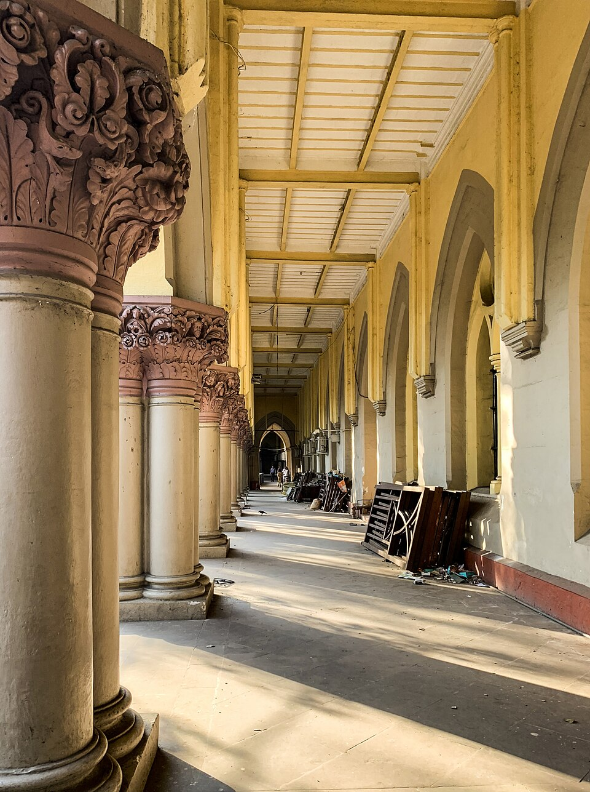
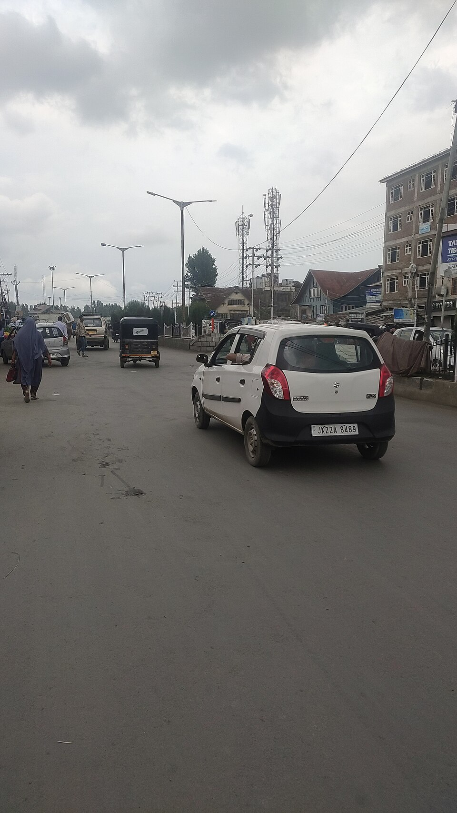
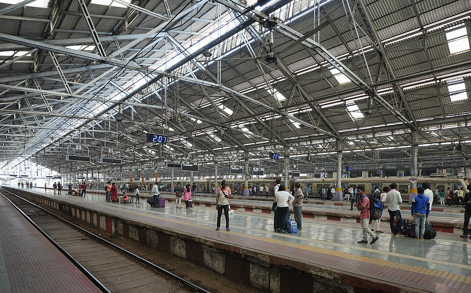

राष्ट्रीय
मोहन भागवत बोले, अहंकार ‘मैं और मेरा’ तक सीमित है, दया से हल होंगी समस्याएं
RSS प्रमुख मोहन भागवत ने दिल्ली में एक कार्यक्रम के दौरान कहा कि रावण और राम में मुख्य अंतर अहंकार और दया का है। उन्होंने वैश्विक और घरेलू चुनौतियों से निपटने के लिए समाज से आपसी जुड़ाव बढ़ाने की अपील की।
राष्ट्रीयशाहरुख खान और करीना कपूर फिल्म 'किंग' के नए गाने में आए नजर
अभिनेता शाहरुख खान और अभिनेत्री करीना कपूर फिल्म 'किंग' के नए गाने 'डैडी कूल' में साथ नजर आए हैं। इस गाने को मुंबई में 27 नवंबर को लॉन्च किया गया, जिसे सोशल मीडिया पर सकारात्मक प्रतिक्रिया मिल रही है।
 राष्ट्रीय
राष्ट्रीयराजद सांसद सुरेंद्र प्रसाद यादव के परिसीमन वाले बयान पर सफाई
राजद सांसद सुरेंद्र प्रसाद यादव के परिसीमन के समर्थन वाले बयान से राजनीतिक चर्चा शुरू हो गई थी। बाद में उन्होंने स्पष्ट किया कि उनकी बात लोकसभा नहीं बल्कि बिहार में पंचायतों के परिसीमन से जुड़ी थी।
राष्ट्रीयरावण 'मैं और मेरा' में अटका रहा, राम करुणा के प्रतीक: मोहन भागवत
आरएसएस प्रमुख मोहन भागवत ने दिल्ली में एक पुस्तक लोकार्पण समारोह में कहा कि रावण अहंकार में अटका रहा, जबकि भगवान राम करुणा के प्रतीक थे। उन्होंने कहा कि पूरी दुनिया के सुखी रहने पर ही मानव जाति सुखी रह सकती है।
 राष्ट्रीय
राष्ट्रीयचेन्नई के कारोबारी वर्द्धमान जैन ने तिरुपति मंदिर को दिया ₹207 करोड़ का सोना
चेन्नई के कारोबारी वर्द्धमान जैन और उनकी पत्नी राधिका जैन ने तिरुपति मंदिर को 121 किलो सोना और हीरे के आभूषण दान किए हैं, जिनकी कीमत करीब ₹207 करोड़ है।
राष्ट्रीयउत्तर प्रदेश विधानसभा चुनाव: एनडीए में सीट शेयरिंग को लेकर सहयोगियों की बढ़ी मांग
उत्तर प्रदेश विधानसभा चुनाव से पहले एनडीए में सीट बंटवारे को लेकर पेच फंस गया है। बीजेपी के चार सहयोगी दल अपना दल (एस), आरएलडी, सुभासपा और निषाद पार्टी अधिक सीटों की मांग कर रहे हैं, जिससे बीजेपी के सामने संतुलन बनाने की चुनौती खड़ी हो गई है।
 राष्ट्रीय
राष्ट्रीयपरिसीमन और महिला आरक्षण पर कांग्रेस ने सरकार को घेरा, संविधान बदलने का लगाया आरोप
महिला आरक्षण और परिसीमन से जुड़े विधेयक को कैबिनेट की मंजूरी मिलने पर कांग्रेस ने तीखी प्रतिक्रिया दी है। पार्टी ने आरोप लगाया कि सरकार इसके बहाने संविधान बदलना चाहती है और लोकसभा सीटों का मौजूदा संतुलन बनाए रखने की मांग की है।
राष्ट्रीयतमिलनाडु: महिला आईएएस अधिकारी को अश्लील मैसेज भेजने के आरोप में टीवीके विधायक गिरफ्तार
तमिलनाडु में टीवीके विधायक अरुल विग्नेश को एक महिला जिला कलेक्टर को अश्लील मैसेज भेजने के आरोप में शुक्रवार देर शाम पुलिस ने गिरफ्तार कर लिया। इस मामले को लेकर पिछले कई दिनों से राजनीतिक हंगामा चल रहा था।
राष्ट्रीयपूर्व वायुसेना उप प्रमुख एयर मार्शल नागेश कपूर का डीपफेक वीडियो वायरल, पीआईबी ने दी चेतावनी
पीआईबी फैक्ट चेक ने स्पष्ट किया है कि पूर्व वायुसेना उप प्रमुख एयर मार्शल नागेश कपूर का एक वीडियो सोशल मीडिया पर वायरल हो रहा है, जिसमें भारतीय विमानों और एयर डिफेंस सिस्टम के नुकसान का दावा किया गया है। यह पूरी तरह फर्जी और डीपफेक है।
राष्ट्रीयमहिलाओं में बार-बार यूटीआई की समस्या, जानें इसके प्रमुख कारण और बचाव
महिलाओं में यूरिनरी ट्रैक्ट इन्फेक्शन यानी यूटीआई की समस्या आम है। सफदरजंग अस्पताल की पूर्व डॉक्टर सलोनी के अनुसार, लंबे समय तक पेशाब रोकना, सेक्सुअल एक्टिविटी और मेनोपॉज इसके मुख्य कारण हैं।
राष्ट्रीयसूरज बड़जात्या की फिल्म 'ये प्रेम मोल लिया' ने पहले दिन कमाए ₹1.64 करोड़
आयुष्मान खुराना और शर्वरी अभिनीत पारिवारिक ड्रामा फिल्म 'ये प्रेम मोल लिया' ने पहले दिन घरेलू बॉक्स ऑफिस पर ₹1.64 करोड़ का नेट कलेक्शन किया है।
 राष्ट्रीय
राष्ट्रीयसुप्रीम कोर्ट का निर्देश, तिरुपरनकुंद्रम पहाड़ी पर 28 नवंबर को जलेगा दीपक
सुप्रीम कोर्ट ने तमिलनाडु के तिरुपरनकुंद्रम पहाड़ी पर 28 नवंबर को दीपक जलाने का आदेश दिया है। अदालत ने मंदिर के ट्रस्टियों के बोर्ड को निलंबित कर दिया है और सुरक्षा का जिम्मा सीआरपीएफ को सौंपा है।
राष्ट्रीयऑपरेशन सिंदूर भविष्य के युद्ध का टेम्प्लेट, तकनीक और समन्वय सबसे अहम: CDS
CDS जनरल एनएस राजा सुब्रमणि ने कहा कि भविष्य के युद्ध जमीन, आसमान और समुद्र में एक साथ लड़े जाएंगे। उन्होंने भारत के लिए स्वतंत्र रक्षा मॉडल तैयार करने पर जोर दिया।
 राष्ट्रीय
राष्ट्रीयIPS लक्ष्मी सिंह बनीं गाजियाबाद की पुलिस कमिश्नर, नोएडा में रहा सबसे लंबा कार्यकाल
वर्ष 2000 बैच की आईपीएस अधिकारी लक्ष्मी सिंह को नोएडा के पुलिस कमिश्नर पद से हटाकर गाजियाबाद की जिम्मेदारी सौंपी गई है। वह नोएडा की पहली महिला पुलिस कमिश्नर थीं।

राष्ट्रीयकलकत्ता हाईकोर्ट ने पश्चिम बंगाल विधानसभा में नेता प्रतिपक्ष की नियुक्ति रद्द की
कलकत्ता हाईकोर्ट ने पश्चिम बंगाल विधानसभा में ऋतब्रत बनर्जी की नेता प्रतिपक्ष के रूप में नियुक्ति को रद्द कर दिया है। अदालत ने विधानसभा अध्यक्ष को नियमों के तहत नए सिरे से निर्णय लेने का निर्देश दिया है।
राष्ट्रीयकलकत्ता हाईकोर्ट ने पश्चिम बंगाल विधानसभा में नेता प्रतिपक्ष की नियुक्ति को किया खारिज
कलकत्ता हाईकोर्ट ने पश्चिम बंगाल विधानसभा में रितब्रत बनर्जी को नेता प्रतिपक्ष और अखरूजमां को मुख्य सचेतक बनाने के स्पीकर के आदेश को रद्द कर दिया है। अदालत ने 10 दिन के भीतर नए सिरे से फैसला लेने का निर्देश दिया है।
 राष्ट्रीय
राष्ट्रीयश्रीगंगानगर में गंभीर प्रदूषण, दुनिया के सबसे प्रदूषित शहरों में शामिल
राजस्थान का श्रीगंगानगर ज़िला इन दिनों गंभीर वायु प्रदूषण की चपेट में है। दिवाली के बाद से यहां एक्यूआई का स्तर लगातार चिंताजनक बना हुआ है और यह दुनिया के सबसे प्रदूषित शहरों की सूची में शीर्ष पर रहा है।
राष्ट्रीयकेंद्रीय मंत्रिमंडल ने परिसीमन और महिला आरक्षण से जुड़े नए विधेयक को दी मंजूरी
केंद्रीय मंत्रिमंडल ने संसद के विशेष सत्र से पहले महिला आरक्षण और परिसीमन से जुड़े नए संविधान संशोधन विधेयक को मंजूरी दी है। इसमें लोकसभा सीटों में 50 प्रतिशत तक की बढ़ोतरी का प्रस्ताव है।
राष्ट्रीयदिल्ली के सफदरजंग अस्पताल में फर्जी डिग्रियों के सहारे डॉक्टर बना 11वीं पास
दिल्ली के सफदरजंग अस्पताल में फर्जी MBBS और MD डिग्रियों के आधार पर जूनियर रेजिडेंट के तौर पर काम करने वाले 11वीं पास शख्स को गिरफ्तार किया गया है। एसओजी मामले की जांच कर रही है।
राष्ट्रीयअलीगढ़: CRPF जवानों ने शहीद की बेटी की शादी में निभाया पिता और भाई का फर्ज
अलीगढ़ में 16 साल पहले शहीद हुए CRPF जवान ओमप्रकाश की बेटी की शादी में उनके साथी जवान पहुंचे। जवानों ने पिता और भाई की जिम्मेदारी निभाते हुए विवाह समारोह में शिरकत की और परिवार को संबल दिया।
राष्ट्रीयलोकसभा सीटों में 50 प्रतिशत बढ़ोतरी के संशोधन विधेयक को कैबिनेट की मंजूरी
केंद्रीय मंत्रिमंडल ने लोकसभा सीटों में 50 प्रतिशत बढ़ोतरी से जुड़े परिसीमन और महिला आरक्षण विधेयक के संशोधनों को मंजूरी दे दी है। कांग्रेस ने इस कदम पर सवाल उठाए हैं।
 राष्ट्रीय
राष्ट्रीययूपी चुनाव 2027: समाजवादी पार्टी ने जारी किया घोषणापत्र, नौकरियों और ठेकों पर बड़े वादे
समाजवादी पार्टी ने उत्तर प्रदेश में 2027 के विधानसभा चुनाव के लिए घोषणापत्र जारी किया है। इसमें सरकारी नौकरियों, गन्ना भुगतान और ठेकों में हिस्सेदारी जैसे मुद्दों पर कई बड़े वादे किए गए हैं।
राष्ट्रीयलोकसभा सीटों में 50 प्रतिशत तक बढ़ोतरी की तैयारी, परिसीमन संशोधन विधेयक को मंजूरी
केंद्र सरकार ने संसद के विशेष सत्र में पेश होने वाले परिसीमन संशोधन विधेयक को मंजूरी दे दी है। इसके तहत लोकसभा सीटों में 50 प्रतिशत तक की एकसमान बढ़ोतरी और 1971 की जनगणना के आधार पर फ्रीज को आगे बढ़ाने का प्रस्ताव है।
राष्ट्रीयपूर्व सीजेआई बीआर गवई ने जजों की नियुक्ति पर उठाए सवाल, राष्ट्रपति को लिखा पत्र
सुप्रीम कोर्ट के पूर्व चीफ जस्टिस बीआर गवई ने राष्ट्रपति द्रौपदी मुर्मू को पत्र लिखकर उच्च न्यायपालिका में जजों की नियुक्ति और ट्रांसफर पर सवाल उठाए हैं। उन्होंने सभी वर्गों के उचित प्रतिनिधित्व की मांग की है।
राष्ट्रीयसंसद का विशेष सत्र 30 नवंबर से, डीलिमिटेशन बिल पर सियासी चर्चा तेज
केंद्र सरकार ने संसद का विशेष सत्र बुलाया है। चर्चा है कि इस दौरान मोदी सरकार डीलिमिटेशन बिल पेश कर सकती है, जिसे लेकर राजनीतिक सरगर्मी बढ़ गई है।
राष्ट्रीयसंसद के विशेष सत्र में परिसीमन और महिला आरक्षण बिल पर चर्चा संभव
केंद्र सरकार ने संसद के आगामी सत्र में परिसीमन और महिला आरक्षण से जुड़े विधेयकों को दोबारा लाने की तैयारी की है। बिल पास होने पर लोकसभा सीटों की संख्या बढ़ने और महिलाओं को 33 प्रतिशत आरक्षण मिलने का रास्ता साफ होगा।
राष्ट्रीयडिमिटेशन बिल पर डीएमके के रुख में नरमी, संशोधनों के बाद समर्थन पर कर सकती है विचार
डीएमके ने संकेत दिया है कि यदि नए डिमिटेशन बिल में पार्टी की चिंताओं का समाधान किया जाता है, तो वह इस पर विचार कर सकती है। प्रवक्ता टीसीएस इलनगोवन ने कहा कि संशोधित मसौदे की समीक्षा के बाद अंतिम निर्णय लिया जाएगा।
राष्ट्रीयनीम करोली बाबा पर बनी फिल्म 'हनुमान अंश' ओटीटी पर हुई रिलीज
महज ₹2 करोड़ के बजट में बनी फिल्म 'हनुमान अंश' ने बॉक्स ऑफिस पर ₹450 करोड़ से अधिक की कमाई कर नया रिकॉर्ड बनाया है।
राष्ट्रीयउत्तर प्रदेश में पंचायत चुनाव टले, ग्राम पंचायतों का कार्यकाल छह महीने बढ़ा
उत्तर प्रदेश में पंचायत चुनाव टलने के बाद योगी सरकार ने ग्राम पंचायतों का कार्यकाल छह महीने के लिए बढ़ा दिया है। मौजूदा प्रधान इस अवधि तक अपनी जिम्मेदारी संभालते रहेंगे।
राष्ट्रीयसंसद सत्र से पहले परिसीमन विधेयक पर विचार, सभी राज्यों में 50% सीटें बढ़ाने का प्रस्ताव
संसद के आगामी सत्र से पहले सरकार सभी राज्यों में लोकसभा सीटें 50% बढ़ाने वाले परिसीमन विधेयक पर विचार कर रही है। इसे पारित कराने के लिए संख्या बल जुटाने की कवायद शुरू हो गई है।
राष्ट्रीयपरिसीमन विधेयक पर कार्ति चिदंबरम के संकेत, बदल सकता है डीएमके और एनसीपी-एसपी का रुख
कांग्रेस सांसद कार्ति चिदंबरम ने परिसीमन विधेयक को लेकर डीएमके और एनसीपी-एसपी के रुख में संभावित बदलाव के संकेत दिए हैं। उन्होंने सोशल मीडिया पर पोस्ट कर यह बात कही।
राष्ट्रीयसंसद के विशेष सत्र से पहले कांग्रेस ने जारी किया व्हिप, सभी सांसदों को दिल्ली रहने का निर्देश
संसद के आगामी विशेष सत्र को लेकर कांग्रेस ने अपने सभी लोकसभा और राज्यसभा सांसदों को 29 नवंबर तक दिल्ली में मौजूद रहने का निर्देश दिया है। पार्टी ने सरकार की मंशा पर सवाल उठाए हैं।
 राष्ट्रीय
राष्ट्रीयउत्तराखंड के हरिद्वार में साल 2027 में होगा अर्धकुंभ का आयोजन
उत्तराखंड के हरिद्वार में वर्ष 2027 के अर्धकुंभ मेले की तैयारियां शुरू हो गई हैं। यह आयोजन 14 जनवरी से 20 अप्रैल तक प्रस्तावित है, जिसमें चार अमृत स्नान समेत कई प्रमुख स्नान पर्व होंगे।
राष्ट्रीयपरिसीमन बिल पर डीएमके दे सकती है मोदी सरकार का समर्थन, कांग्रेस सांसद ने किया दावा
कांग्रेस सांसद मनोज कुमार ने दावा किया है कि डीएमके परिसीमन बिल पर कुछ शर्तों के साथ केंद्र सरकार का समर्थन कर सकती है। इस मामले में अंतिम फैसला 30 नवंबर तक लिया जाएगा।
राष्ट्रीयगुजरात के वडोदरा से जैश-ए-मोहम्मद का संदिग्ध आतंकी गिरफ्तार, हथियार बरामद
गुजरात एटीएस ने वडोदरा से जैश-ए-मोहम्मद से जुड़े एक संदिग्ध आतंकी को गिरफ्तार किया है। आरोपी के पास से एक राइफल और 20 से अधिक जिंदा कारतूस बरामद किए गए हैं, और फिलहाल उससे पूछताछ जारी है।
राष्ट्रीयYSRCP ने परिसीमन विधेयक का समर्थन करने के दिए संकेत, रखी एक शर्त
YSRCP ने संसद में परिसीमन विधेयक का समर्थन करने की इच्छा जताई है, बशर्ते क्षेत्रीय संतुलन सुनिश्चित करने के लिए उचित सुरक्षा उपाय किए जाएं।
 राष्ट्रीय
राष्ट्रीयगुजरात की डॉली वडालिया को 26 साल की उम्र में मिला भारतीय पासपोर्ट
मोज़ाम्बिक में जन्मीं और 25 दिन की उम्र से भारत में रह रहीं डॉली वडालिया को कानूनी अड़चनों के बाद आखिरकार भारतीय नागरिकता और पासपोर्ट मिल गया है।
राष्ट्रीयसुप्रीम कोर्ट ने सीबीएसई छात्रों को दी राहत, मौजूदा भाषा विकल्प जारी रखने की अनुमति
सुप्रीम कोर्ट ने स्पष्ट किया है कि सीबीएसई स्कूलों के छात्र अपनी मौजूदा दो या तीन भाषाओं की पसंद को जारी रख सकते हैं। कोर्ट ने कहा कि नई नीति के तहत छात्रों पर भाषा बदलने का दबाव नहीं डाला जा सकता।
राष्ट्रीयवायु प्रदूषण का किडनी स्वास्थ्य पर पड़ रहा गंभीर असर, शोध में खुलासा
हालिया अध्ययनों के अनुसार, वायु प्रदूषण के सूक्ष्म कण शरीर में सूजन और ऑक्सीडेटिव स्ट्रेस बढ़ाकर किडनी की कार्यक्षमता को प्रभावित कर सकते हैं। डायबिटीज और हाई बीपी के मरीजों को अधिक सतर्क रहने की सलाह दी गई है।
राष्ट्रीयअमिताभ बच्चन के आवास 'जलसा' और दिलजीत दोसांझ के कॉन्सर्ट को बम से उड़ाने की धमकी
बॉलीवुड अभिनेता अमिताभ बच्चन के बंगले 'जलसा' और गायक दिलजीत दोसांझ के मुंबई कॉन्सर्ट को ईमेल के जरिए बम से उड़ाने की धमकी मिली है, जिसके बाद सुरक्षा बढ़ा दी गई है।
राष्ट्रीयसंसद के विशेष सत्र से पहले आज केंद्रीय कैबिनेट की बैठक, महिला आरक्षण और परिसीमन पर चर्चा संभव
प्रधानमंत्री नरेंद्र मोदी की अध्यक्षता में आज केंद्रीय कैबिनेट की बैठक होगी। 30 नवंबर से शुरू होने वाले संसद के विशेष सत्र में महिला आरक्षण और परिसीमन से जुड़े विधेयक पेश किए जा सकते हैं।
राष्ट्रीयउत्तर प्रदेश चुनाव: चंद्रशेखर और ओवैसी के 'सामाजिक परिवर्तन मोर्चा' की पहली साझा रैली
संविधान दिवस के मौके पर लखनऊ में चंद्रशेखर आज़ाद और असदुद्दीन ओवैसी ने 'सामाजिक परिवर्तन मोर्चा' के तहत पहली साझा रैली की। इस दौरान दोनों नेताओं ने भाजपा और सपा पर निशाना साधा।
 राष्ट्रीय
राष्ट्रीयशाहरुख खान की आगामी फिल्म किंग का रनटाइम 3 घंटे 17 मिनट तय
बॉलीवुड अभिनेता शाहरुख खान की आने वाली फिल्म किंग का रनटाइम 3 घंटे 17 मिनट होगा। इसके साथ ही यह उनके करियर की लंबी फिल्मों में शामिल हो जाएगी।
राष्ट्रीयहिमाचल प्रदेश की देव परंपरा पर अंतरराष्ट्रीय शोध, बखाण अनुष्ठान में भविष्यवाणियों का अध्ययन
अंतरराष्ट्रीय शोध पत्रिका में हिमाचल प्रदेश के ऊपरी शिमला क्षेत्र की देव परंपरा और बखाण अनुष्ठान पर अध्ययन प्रकाशित हुआ है। इसमें मौसम, महामारी और कृषि से जुड़ी भविष्यवाणियों का जिक्र है।
राष्ट्रीयJEE Main 2027: जनवरी सत्र के आवेदन में सुधार की सुविधा आज से शुरू
नेशनल टेस्टिंग एजेंसी आज से जेईई मेन 2027 जनवरी सत्र के आवेदन पत्र में सुधार की सुविधा शुरू कर रही है। पंजीकृत उम्मीदवार 29 नवंबर तक आधिकारिक वेबसाइट पर जाकर जरूरी बदलाव कर सकते हैं।
राष्ट्रीयउत्तर भारत में शीतलहर और घने कोहरे का प्रकोप, 13 राज्यों में मौसम विभाग का अलर्ट
देशभर में ठंड बढ़ने के साथ ही राजस्थान में शीतलहर और उत्तर भारत के 13 राज्यों में घने कोहरे का अलर्ट जारी किया गया है। वहीं, दक्षिण भारत के कुछ हिस्सों में बारिश की संभावना है।
राष्ट्रीयसंसद में महिला आरक्षण और परिसीमन बिल की तैयारी, एनसीपी ने जारी किया व्हिप
संसद में महिला आरक्षण और परिसीमन से जुड़े विधेयकों को लाने की तैयारी पूरी हो चुकी है। इस बीच एनसीपी (एसपी) ने अपने सभी लोकसभा सांसदों के लिए व्हिप जारी किया है।
राष्ट्रीयउत्तर प्रदेश में बीजेपी ने तेज की चुनावी घेराबंदी, सामाजिक समीकरण साधने में जुटे ब्रजेश पाठक
उत्तर प्रदेश विधानसभा चुनाव 2027 से पहले बीजेपी ने सामाजिक समीकरणों को मजबूत करने के लिए संपर्क अभियान तेज कर दिया है। डिप्टी सीएम ब्रजेश पाठक के नेतृत्व में लखनऊ में दो दिवसीय बैठक आयोजित की गई।
राष्ट्रीयसंसद का विशेष सत्र बुलाए जाने पर कांग्रेस ने जताई आपत्ति
केंद्र सरकार द्वारा संसद का विशेष सत्र बुलाए जाने के फैसले पर कांग्रेस ने तीखी प्रतिक्रिया दी है। पार्टी नेताओं ने इसे संविधान और संसद की गरिमा के खिलाफ बताया है।
राष्ट्रीयअखिलेश यादव ने आजम खान को एयरपोर्ट छोड़ा, यूपी चुनाव से पहले सियासी संकेत
उत्तर प्रदेश विधानसभा चुनाव से पहले समाजवादी पार्टी प्रमुख अखिलेश यादव ने आजम खान को खुद अपनी गाड़ी से एयरपोर्ट पहुंचकर विदा किया, जिसे एक बड़े राजनीतिक संकेत के रूप में देखा जा रहा है।
राष्ट्रीयजाकिर नाइक के संगठन इस्लामिक रिसर्च फाउंडेशन पर कार्रवाई का अधिकार राज्यों को मिला
केंद्र सरकार ने जाकिर नाइक के प्रतिबंधित संगठन इस्लामिक रिसर्च फाउंडेशन के खिलाफ UAPA के तहत फंड और प्रॉपर्टी जब्त करने का अधिकार राज्य सरकारों को दे दिया है।
राष्ट्रीयहैदराबाद में कांग्रेस और BRS कार्यकर्ताओं के बीच झड़प, बिरयानी प्रोटेस्ट के दौरान हंगामा
तेलंगाना के हैदराबाद में कांग्रेस और BRS कार्यकर्ताओं के बीच हिंसक झड़प हो गई। BRS ने सरकारी नौकरियों के वादों को लेकर बिरयानी प्रोटेस्ट रखा था, जिसमें राहुल गांधी का पुतला दहन किया गया। KTR ने इस हमले की कड़ी निंदा की है।
राष्ट्रीयफिरोजाबाद में शादी के दौरान उधारी मांगने पहुंची युवती, हंगामा
उत्तर प्रदेश के फिरोजाबाद में एक शादी समारोह के दौरान गाजियाबाद से पहुंची युवती ने दूल्हे पर उधार दिए रुपये न लौटाने का आरोप लगाते हुए हंगामा किया। पुलिस के हस्तक्षेप के बाद दोनों पक्षों में समझौता हुआ।
राष्ट्रीयहैदराबाद में संविधान दिवस पर कांग्रेस और BRS कार्यकर्ताओं के बीच झड़प
तेलंगाना के हैदराबाद में संविधान दिवस पर कांग्रेस और BRS कार्यकर्ताओं के बीच झड़प हो गई। BRS नेता राहुल गांधी का पुतला रखकर बिरयानी प्रोटेस्ट कर रहे थे।
राष्ट्रीयसंसद सत्र से पहले प्रधानमंत्री नरेंद्र मोदी की अध्यक्षता में आज होगी कैबिनेट बैठक
संसद के आगामी सत्र से पहले प्रधानमंत्री नरेंद्र मोदी की अध्यक्षता में आज दोपहर केंद्रीय कैबिनेट की बैठक होगी। इसमें परिसीमन और महिला विधेयक पर चर्चा की संभावना है।
राष्ट्रीयबिहार: कटिहार में ग्रामीण कार्य विभाग के इंजीनियर के ठिकानों पर विजिलेंस की छापेमारी
बिहार के कटिहार में निगरानी विभाग ने ग्रामीण कार्य विभाग के कार्यपालक अभियंता अजीत कुमार दास के किराए के मकान पर छापेमारी की। जांच के दौरान जमीन के कई डीड और दस्तावेज बरामद हुए हैं।
राष्ट्रीयचेन्नई के दंपती ने तिरुमाला मंदिर में किया 121 किलोग्राम सोने का दान
चेन्नई के एक दंपती ने तिरुपति स्थित तिरुमाला वेंकटेश्वर मंदिर में 121 किलोग्राम सोना दान किया है, जिसकी बाजार में कीमत करीब ₹206 करोड़ बताई गई है।
राष्ट्रीयझारखंड के गिरिडीह में एक ही परिवार के आठ लोग अचानक बेहोश, धनबाद में भर्ती
झारखंड के गिरिडीह जिले में एक ही परिवार के आठ सदस्यों की अचानक तबीयत बिगड़ गई। चक्कर आने और बेहोशी के बाद सभी को धनबाद के अस्पताल में भर्ती कराया गया है, जहां डॉक्टरों की देखरेख में उनका इलाज जारी है।
राष्ट्रीयसंसद सत्र से पहले मोदी कैबिनेट की बैठक में परिसीमन विधेयक पर हो सकती है चर्चा
संसद के आगामी सत्र से पहले शुक्रवार को होने वाली केंद्रीय मंत्रिमंडल की बैठक में परिसीमन और महिला आरक्षण विधेयक पर चर्चा संभावित है।
राष्ट्रीयबंगाली अभिनेत्री मिमी चक्रवर्ती ने की सगाई, सोशल मीडिया पर साझा की तस्वीरें
बंगाली अभिनेत्री मिमी चक्रवर्ती ने एक अंतरंग समारोह में सगाई कर ली है। उन्होंने सोशल मीडिया पर रजिस्ट्री की तस्वीरें साझा की हैं, हालांकि मंगेतर का चेहरा छिपा रखा है।
राष्ट्रीय18 साल से हत्या के मामले में फरार आरोपी यूएई से भारत लाया गया
करीब 18 साल पुराने हत्या मामले में फरार चल रहे आरोपी सुजीत कुमार को इंटरपोल के रेड नोटिस के आधार पर यूएई से गिरफ्तार कर भारत लाया गया है।
 राष्ट्रीय
राष्ट्रीयआगरा के ताजमहल परिसर में बंदरों का आतंक, पर्यटकों में दहशत का माहौल
ताजमहल परिसर में बंदरों का जमावड़ा बढ़ने से पर्यटकों में चिंता और डर का माहौल है। सोशल मीडिया पर एक वीडियो वायरल हो रहा है जिसमें सैकड़ों बंदरों का झुंड नजर आ रहा है।
राष्ट्रीयहैदराबाद में बीआरएस का 'बिरयानी विरोध', कांग्रेस कार्यकर्ताओं के साथ झड़प
तेलंगाना के हैदराबाद में राहुल गांधी के वादों को लेकर बीआरएस और कांग्रेस कार्यकर्ताओं के बीच झड़प हो गई। बीआरएस नेताओं ने तीन साल पहले के दौरे की बरसी पर अनोखा प्रदर्शन किया।
राष्ट्रीयपश्चिम बंगाल: ममता बनर्जी के भाई स्वपन बनर्जी ने अभिषेक बनर्जी के खिलाफ की FIR की मांग
पश्चिम बंगाल की मुख्यमंत्री ममता बनर्जी के भाई स्वपन बनर्जी उर्फ बाबुन ने अपने भतीजे अभिषेक बनर्जी पर धमकाने और रक्तदान शिविर रोकने का आरोप लगाते हुए कोलकाता के कालीघाट थाने में FIR की मांग की है।
राष्ट्रीयसंसद के आगामी सत्र से पहले परिसीमन के मुद्दे पर कांग्रेस ने उठाए सवाल
संसद के आगामी सत्र से पहले कांग्रेस ने शरद पवार और एमके स्टालिन के रुख को लेकर सवाल उठाए हैं। कार्ति चिदंबरम और माणिकम टैगोर के बयानों से राजनीतिक हलकों में चर्चा तेज हो गई है।
राष्ट्रीयतहसीन पूनावाला ने नेटफ्लिक्स को दी चेतावनी, पाकिस्तानी सीरीज के भारत में प्रसारण का विरोध
राजनैतिक विश्लेषक तहसीन पूनावाला ने नेटफ्लिक्स की पाकिस्तानी सीरीज 'जो बच्चे हैं संग समेट लो' के भारत में रिलीज होने पर कड़ा विरोध जताया है।
राष्ट्रीयजलगांव के मजदूर के बेटे भूषण ठाकरे ने 'कौन बनेगा करोड़पति' में जीते एक करोड़ रुपये
महाराष्ट्र के जलगांव के रहने वाले 28 वर्षीय भूषण ठाकरे ने लोकप्रिय गेम शो 'कौन बनेगा करोड़पति' में एक करोड़ रुपये जीते हैं। यूपीएससी की तैयारी कर रहे भूषण ने लगभग एक दशक के संघर्ष के बाद यह सफलता हासिल की है।
राष्ट्रीयमहाराष्ट्र के भूषण ठाकरे ने कौन बनेगा करोड़पति में जीते एक करोड़ रुपये
महाराष्ट्र के जलगांव के रहने वाले यूपीएससी अभ्यर्थी भूषण ठाकरे ने लोकप्रिय क्विज शो 'कौन बनेगा करोड़पति' में एक करोड़ रुपये की राशि अपने नाम की है।
राष्ट्रीयसंसद सत्र से पहले शुक्रवार को होगी केंद्रीय कैबिनेट की बैठक
30 नवंबर से शुरू हो रहे लोकसभा के विशेष सत्र से पहले शुक्रवार को केंद्रीय कैबिनेट की बैठक होगी, जिसमें परिसीमन से जुड़े महिला आरक्षण विधेयक पर चर्चा संभव है।
राष्ट्रीयमुंबई पुलिस ने कॉकरोच जनता पार्टी के नेताओं के खिलाफ जारी किया लुकआउट सर्कुलर
मुंबई पुलिस ने 2 अक्टूबर को शिवाजी पार्क में हुए प्रदर्शन के सिलसिले में कॉकरोच जनता पार्टी के तीन नेताओं के खिलाफ लुकआउट सर्कुलर जारी किया है।
राष्ट्रीयराहुल गांधी राजनीतिक दिखावे के लिए करते हैं संविधान का इस्तेमाल: अमित शाह
केंद्रीय गृह मंत्री अमित शाह ने दिल्ली में एक कार्यक्रम के दौरान कांग्रेस नेता राहुल गांधी पर निशाना साधा। उन्होंने कहा कि संविधान की प्रति जेब में रखना या लहराना उसका सम्मान नहीं है।

राष्ट्रीयश्रीनगर के लाल चौक पर कड़ी सुरक्षा के बीच मनाई गई दिवाली
जम्मू-कश्मीर के श्रीनगर स्थित लाल चौक पर कुछ लोगों द्वारा कड़ी सुरक्षा के बीच दिवाली मनाए जाने का मामला सामने आया है। इस दौरान स्थानीय स्तर पर धार्मिक आयोजनों और पाबंदियों को लेकर चर्चा शुरू हो गई है।
राष्ट्रीयसुधांशु त्रिवेदी ने समाजवादी पार्टी के 2027 घोषणापत्र पर उठाए सवाल
भाजपा नेता सुधांशु त्रिवेदी ने समाजवादी पार्टी के नए घोषणापत्र को महज एक औपचारिकता बताया है। उन्होंने विपक्षी दलों पर वादे पूरे न करने का आरोप लगाया है।
राष्ट्रीयमध्य प्रदेश: नागौद SDM सोमेश द्विवेदी और ब्यौहारी SDM अर्चना मिश्रा परिणय सूत्र में बंधे
मध्य प्रदेश के नागौद SDM सोमेश द्विवेदी और ब्यौहारी SDM अर्चना मिश्रा विवाह बंधन में बंध गए हैं। रीवा में कॉलेज के दिनों से शुरू हुई उनकी दोस्ती प्रशासनिक सेवा तक पहुंची और अब शादी में बदल गई है।
राष्ट्रीयसंसद सत्र का प्रस्ताव, लोकसभा 30 नवंबर और राज्यसभा 2 दिसंबर को बैठेगी
केंद्रीय मंत्री किरेन रिजिजू ने बताया कि सरकार ने लोकसभा स्पीकर और राज्यसभा के सभापति से संसद के दोनों सदनों की बैठकें फिर से बुलाने का अनुरोध किया है।
 राष्ट्रीय
राष्ट्रीयसपा ने जारी किया 2027 चुनाव का मैनिफ़ेस्टो, आज़म ख़ान ने जेल के दिनों को किया याद
समाजवादी पार्टी ने 2027 के उत्तर प्रदेश विधानसभा चुनाव के लिए अपना मैनिफ़ेस्टो जारी कर दिया है। इस दौरान वरिष्ठ नेता आज़म ख़ान ने जेल में बिताए अपने दिनों का ज़िक्र करते हुए अखिलेश यादव की तारीफ़ की।
राष्ट्रीयसंसद का विशेष सत्र, लोकसभा 30 नवंबर और राज्यसभा 2 दिसंबर को होगी शुरू
केंद्र सरकार ने संसद का विशेष सत्र बुलाया है। इसके तहत लोकसभा की कार्यवाही 30 नवंबर से और राज्यसभा की कार्यवाही 2 दिसंबर से शुरू होगी।
राष्ट्रीयकेंद्र सरकार ने बुलाई संसद के दोनों सदनों की एक-एक दिन की बैठक
केंद्र सरकार ने संसद का एक-एक दिन का सत्र बुलाया है। लोकसभा की बैठक 30 नवंबर और राज्यसभा की बैठक 2 दिसंबर को होगी। महिला आरक्षण बिल लाए जाने की अटकलें लगाई जा रही हैं।
राष्ट्रीयउत्तराखंड की गरतांग गली: 11 हजार फीट की ऊंचाई पर स्थित ऐतिहासिक लकड़ी का रास्ता
उत्तराखंड के उत्तरकाशी जिले में स्थित गरतांग गली लगभग 11,000 फीट की ऊंचाई पर बना एक ऐतिहासिक लकड़ी का रास्ता है, जो अपनी प्राकृतिक खूबसूरती और ट्रेकिंग के लिए प्रसिद्ध है।
राष्ट्रीयउत्तर प्रदेश चुनाव 2027: समाजवादी पार्टी ने जारी किया घोषणापत्र, किए कई बड़े वादे
समाजवादी पार्टी ने 2027 के उत्तर प्रदेश विधानसभा चुनाव के लिए घोषणापत्र जारी किया है। इसमें 25 लाख सरकारी नौकरियों और युवाओं को ₹5,000 मासिक भत्ता देने का वादा किया गया है।
राष्ट्रीयसमान नागरिक संहिता पर अमित शाह का राहुल गांधी पर तीखा हमला
केंद्रीय गृह मंत्री अमित शाह ने कांग्रेस और राहुल गांधी पर समान नागरिक संहिता का विरोध करने का आरोप लगाया है। उन्होंने कहा कि भाजपा शासित सभी राज्य जल्द ही इसे लागू करेंगे।
राष्ट्रीययूपी चुनाव 2027: समाजवादी पार्टी ने अपने सभी वादे पूरे किए, अखिलेश यादव का दावा
उत्तर प्रदेश विधानसभा चुनाव 2027 से पहले समाजवादी पार्टी के प्रमुख अखिलेश यादव ने घोषणापत्र जारी करते हुए दावा किया कि उनकी पार्टी ने अतीत में अपने हर वादे को जमीन पर उतारा है।
राष्ट्रीयसुप्रीम कोर्ट के आदेश के बाद आनंद मोहन और अनंत सिंह को करना होगा सरेंडर
सुप्रीम कोर्ट द्वारा रिहाई रद्द किए जाने के बाद पूर्व सांसद आनंद मोहन को एक महीने में सरेंडर करना होगा। वहीं, अनंत सिंह को दुलार चंद यादव हत्याकांड में 4 दिसंबर 2026 तक आत्मसमर्पण करना है।
राष्ट्रीयतिरुपति मंदिर में चेन्नई के दंपती ने दिया 121 किलो सोना, कीमत ₹208 करोड़
चेन्नई के कारोबारी वर्धमान जैन और उनकी पत्नी राधिका जैन ने तिरुपति मंदिर में 121 किलो सोने के आभूषण दान किए हैं। टीटीडी के इतिहास में किसी एक भक्त द्वारा दिया गया यह अब तक का सबसे बड़ा दान है।
राष्ट्रीयबिना मंजूरी वाले पद पर स्थायी नियुक्ति का दावा नहीं कर सकते: सुप्रीम कोर्ट
सुप्रीम कोर्ट ने स्पष्ट किया है कि कर्मचारी केवल योग्यता पूरी करने के आधार पर बिना मंजूरी वाले पद पर स्थायी नियुक्ति या समायोजन की मांग नहीं कर सकता है।
राष्ट्रीयरवि किशन ने किया खुलासा, सार्वजनिक कार्यक्रमों में क्यों बचते हैं मनोज तिवारी से
अभिनेता और सांसद रवि किशन ने एक टॉक शो के दौरान खुलासा किया कि वह और मनोज तिवारी सार्वजनिक कार्यक्रमों में आमने-सामने आने से बचते हैं।
 राष्ट्रीय
राष्ट्रीयनेटफ्लिक्स से सरकार की दो टूक, भारत में पाकिस्तानी कंटेंट का प्रसारण न हो
केंद्र सरकार ने नेटफ्लिक्स को निर्देश दिया है कि वह भारत में पाकिस्तानी कंटेंट न दिखाए। सूचना एवं प्रसारण मंत्रालय ने पहलगाम हमले के बाद जारी 2025 की एडवाइजरी का पालन करने को कहा है।
राष्ट्रीयभारत तिवारी एनकाउंटर मामला: न्याय की मांग को लेकर 27 नवंबर से भूख हड़ताल करेंगी मां
भोजपुर के भारत तिवारी एनकाउंटर मामले में न्याय न मिलने से नाराज मां आशा देवी 27 नवंबर से अनिश्चितकालीन भूख हड़ताल शुरू करेंगी। उन्होंने सरकार और प्रशासन पर वादाखिलाफी का आरोप लगाया है।
राष्ट्रीयसिक्किम के मुख्यमंत्री प्रेम सिंह तमांग की मां धनमाया का निधन
सिक्किम के मुख्यमंत्री प्रेम सिंह तमांग की मां धनमाया तमांग का 87 वर्ष की उम्र में सिलीगुड़ी के एक अस्पताल में निधन हो गया है। वह पिछले कुछ समय से बीमार चल रही थीं।
राष्ट्रीयईडी की संपत्ति कुर्की पर सुप्रीम कोर्ट ने जताई चिंता, मांगा जवाब
सुप्रीम कोर्ट ने एक साल में ईडी द्वारा करीब 400 संपत्तियों की कुर्की के मामलों पर सवाल उठाया है। अदालत ने पूछा कि एक अधिकारी इतनी बड़ी संख्या में मामलों का फैसला कैसे कर सकता है।
राष्ट्रीयनेटफ्लिक्स से पाकिस्तानी कंटेंट हटाने को कहा गया, मंत्रालय ने दी चेतावनी
केंद्र सरकार ने नेटफ्लिक्स को भारत में पाकिस्तानी कंटेंट प्रसारित न करने के निर्देश दिए हैं। यह कदम वेब सीरीज 'जो बच्चे हैं संग समेट लो' को लेकर आई शिकायतों के बाद उठाया गया है।
राष्ट्रीयसंविधान दिवस पर भाजपा मनाएगी गौरव दिवस, कांग्रेस निकालेगी रक्षा मार्च
संविधान दिवस के अवसर पर 26 नवंबर को देश भर में विभिन्न राजनीतिक कार्यक्रम आयोजित किए जा रहे हैं। भाजपा गौरव दिवस मनाएगी, वहीं कांग्रेस संविधान रक्षा मार्च निकालेगी।
 राष्ट्रीय
राष्ट्रीयटाइगर श्रॉफ फायरिंग केस: विशेष अदालत ने एक आरोपी शूटर को माना नाबालिग
मुंबई के जुहू में अभिनेता टाइगर श्रॉफ की कार पर हुई फायरिंग के मामले में एक आरोपी शूटर को विशेष MCOCA अदालत ने नाबालिग माना है। कोर्ट ने उसे जुवेनाइल जस्टिस बोर्ड के सामने पेश करने का निर्देश दिया है।
राष्ट्रीयउत्तर प्रदेश चुनाव: समाजवादी पार्टी गुरुवार को जारी करेगी चुनावी घोषणा पत्र
समाजवादी पार्टी संविधान दिवस के अवसर पर अपना चुनावी घोषणा पत्र जारी करेगी। 'सत्ताइस का संकल्प' नाम के इस प्रण-पत्र में महिलाओं को सालाना 40 हजार रुपये देने और मुफ्त बिजली समेत कई वादे शामिल हैं।
राष्ट्रीयमदुरै में कार्तिगई दीपम नहीं जलाने पर सुप्रीम कोर्ट में अवमानना याचिका दायर
मदुरै की तिरुपरनकुंद्रम पहाड़ी पर सुप्रीम कोर्ट के आदेश के बावजूद कार्तिगई दीपम न जलाए जाने पर चार अधिकारियों के खिलाफ अदालत की अवमानना की याचिका दायर की गई है।
राष्ट्रीयउत्तर प्रदेश में एसपी-कांग्रेस गठबंधन पर सस्पेंस, आज अपना घोषणापत्र जारी करेगी समाजवादी पार्टी
उत्तर प्रदेश में समाजवादी पार्टी और कांग्रेस के बीच सीट बंटवारे को लेकर अनिश्चितता बनी हुई है। इस बीच, एसपी प्रमुख अखिलेश यादव आज लखनऊ में पार्टी का चुनावी घोषणापत्र जारी करेंगे।

राष्ट्रीय26/11 मुंबई हमला: जानिए चार दिनों तक चले इस आतंकी हमले में कब और कहाँ क्या हुआ था
26 नवंबर 2008 को मुंबई में हुए भीषण आतंकी हमले में 164 लोगों की जान चली गई थी। लश्कर-ए-तैयबा के आतंकवादियों ने रेलवे स्टेशन, होटलों और अस्पतालों समेत कई प्रमुख जगहों को निशाना बनाया था।
राष्ट्रीयप्रधानमंत्री मोदी ने संविधान दिवस पर लिखा ब्लॉग, कांग्रेस और विपक्ष पर साधा निशाना
प्रधानमंत्री नरेंद्र मोदी ने संविधान दिवस पर ब्लॉग लिखकर कांग्रेस पर निशाना साधा। उन्होंने आरोप लगाया कि विपक्ष ओबीसी आरक्षण में कटौती कर मुसलमानों को आरक्षण देना चाहता है।
 राष्ट्रीय
राष्ट्रीयगोवा विधानसभा चुनाव: कांग्रेस ने जीएफपी और आरजी के साथ गठबंधन पर की चर्चा
गोवा विधानसभा चुनाव के लिए कांग्रेस ने जीएफपी और रिवोल्यूशनरी गोअन्स पार्टी के साथ गठबंधन को लेकर दिल्ली में बैठक की। हालांकि, सीटों के बंटवारे पर अभी तक सहमति नहीं बन पाई है।
 राष्ट्रीय
राष्ट्रीयराजस्थान हाईकोर्ट ने 28 साल बाद सिपाही की बर्खास्तगी रद्द की, ₹20 लाख मुआवजा देने का आदेश
राजस्थान हाईकोर्ट ने 1998 में बर्खास्त किए गए नागौर पुलिस के पूर्व सिपाही शैताना राम की बर्खास्तगी का आदेश रद्द कर दिया है। अदालत ने राज्य सरकार को तीन महीने के भीतर ₹20 लाख मुआवजा देने का निर्देश दिया है।